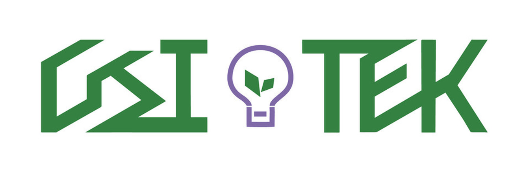

LISTEN
理解需求
交流營運現況與挑戰，
釐清企業的轉型目標。

綠點子永續科技01 ABOUT GSI TEK
好點子，讓改變開始。環境正在改變，企業的下一步也需要新的思考。綠點子連結國立大學專業顧問與產業實務，將複雜的永續議題，轉化成企業可以落實的行動。
從看懂碳排數據、建立 ESG 策略，到規劃減碳路徑，我們與您一起，把每一步做得更扎實。
認識綠點子團隊 （另開原站）串連學術研究與實務經驗，讓轉型的每一個決策有所依循。
從產業特性與企業現況出發，找到真正適合您的永續方向。
從盤點、規劃到執行，陪伴團隊把想法變成日常實踐。
02 OUR EXPERTISE
面對不同階段的挑戰，
我們提供從盤查到轉型的整合輔導。
先看清足跡，
再走出減碳的下一步。
從組織營運到產品生命週期，協助企業蒐集與整理排放資料，掌握碳排來源，建立持續管理的基礎。
諮詢碳盤查服務讓永續思考，
走進企業決策。
釐清利害關係人的關注與企業重大議題，梳理永續目標與行動，將執行成果轉化成清楚、具脈絡的資訊揭露。
諮詢 ESG 輔導面對國際要求，
提前做好準備。
協助企業理解客戶與供應鏈的碳資訊需求，盤點產品相關資料與內部作業，建立申報所需的溝通與資料準備流程。
諮詢 CBAM 輔導為轉型找到資源，
為行動多一份支持。
依企業產業別、現況與發展方向，協助了解適合的政府資源、確認申請條件，並討論計畫準備與執行方向。
查看補助計畫 （另開原站）03 FROM IDEAS TO ACTION
每一步，都與您同行。永續轉型沒有一體適用的答案。
我們從理解您的企業開始，
一起找到能夠持續前進的方式。
LISTEN
交流營運現況與挑戰，
釐清企業的轉型目標。
DISCOVER
整理關鍵資料與資源，
看見需要優先處理的議題。
DESIGN
依企業條件制定策略，
建立清楚可行的執行方向。
ACT
協助團隊執行與檢視，
把永續逐步融入營運。
LET'S MAKE A DIFFERENCE.
Let's grow, together.不確定從何開始也沒關係。
告訴我們您的挑戰，一起找到適合的方向。